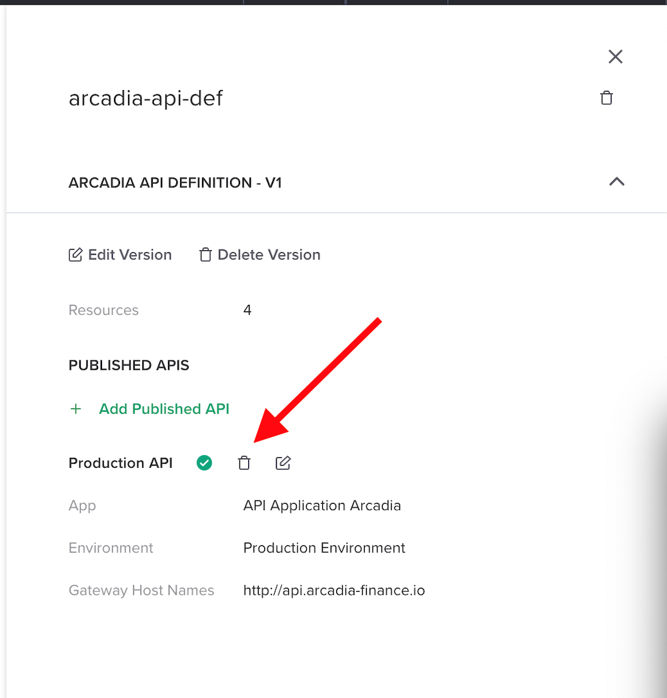
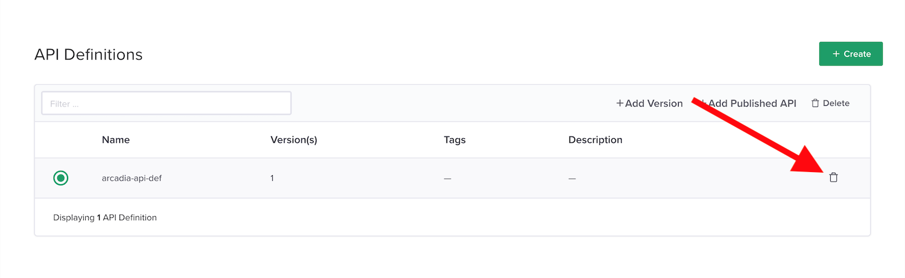
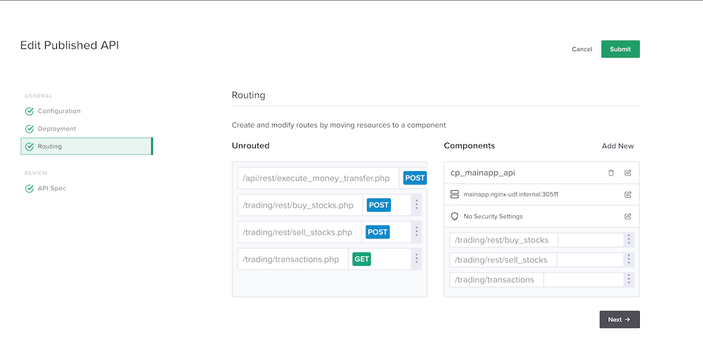

Module 2 - Publish API with OAS3 spec file via API¶
Note
We will clean up the previous lab in order to configure exactly the same objetcts but with API calls only.
Clean up the APIm configuration¶
In the controller GUI, go to
APIsleft menu and click on the existing API definintionarcadia-api-defOn the right panel
Delete the
Production APIby clicking thetrashbuttonDelete the API definition
arcadia-api-def
{kind=link}
Note
Your API Definitions environment is clean.
Create and publish an API Definition with the Controller API¶
Note
We will execute exactly the same job but by using the NGINX Controller control plane only. No GUI.
Connect to the Jumphost (user / user)
Launch
Postman- Open
Arcadia OAScollection - And
runall calls from top to bottom
Note
For every call, check what is happening in the controller GUI
- Open
At then end, you should have the same results as the previous lab.
Edit the
Published APICheck the
Routing. You can see the routes are imported from the OAS3 file and the mapping is done with the components.Make a quick test with the
Arcadia APIpostman collection
{kind=link}
Warning
Check the call Import API Definition OAS3, we imported an OAS3 YAML File directly in the Controller with all the definitions and documentations
Note
In a near future, we will learn more on API definition versions
Warning
As you can notice, there is no security applied on the Component. Let’s move to the next lab to assign a BIG-IP and Controller security policy